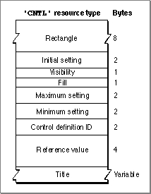

The Control Resource
You can use a control resource to define a control. A control resource is a resource of
type'CNTL'. All control resources must have resource ID numbers greater than 128.
Use theGetNewControlfunction (described on page 5-74) to create a control defined in a control resource. The Control Manager uses the information you specify to create a control record in memory. (The control record is described on page 5-66.)This section describes the structure of this resource after it is compiled by the Rez resource compiler, available from APDA. The format of a Rez input file for a control resource differs from its compiled output form, which is illustrated in Figure 5-25. If you are concerned only with creating a control resource, see "Creating and Displaying a Control" beginning on page 5-13.
Figure 5-25 Structure of a compiled control (
'CNTL') resource
The compiled version of a control resource contains the following elements:
- The rectangle, specified in coordinates local to the window, that encloses the control; this rectangle encloses the control and thus determines its size and location.
- The initial setting for the control.
- For controls--such as buttons--that don't retain a setting, this value should be 0.
- For controls--such as checkboxes or radio buttons--that retain an on-or-off setting, a value of 0 in this element indicates that the control is initially off; a value of 1 indicates that the control is initially on.
- For controls--such as scroll bars and dials--that can take a range of settings, whatever initial value is appropriate within that range is specified in this element.
- For pop-up menus, a combination of values instructs the Control Manager where and how to draw the control title. Appropriate values, along with the constants used to specify them in a Rez input file, are listed here:
CONST popupTitleBold = $00000100; {boldface font style} popupTitleItalic = $00000200; {italic font style} popupTitleUnderline = $00000400; {underline font } { style} popupTitleOutline = $00000800; {outline font style} popupTitleShadow = $00001000; {shadow font style} popupTitleCondense = $00002000; {condensed text} popupTitleExtend = $00004000; {extended text} popupTitleNoStyle = $00008000; {monostyle text} popupTitleLeftJust = $00000000; {place title left } { of pop-up box} popupTitleCenterJust = $00000001; {center title over } { pop-up box} popupTitleRightJust = $000000FF; {place title right } { of pop-up box}
- The visibility of the control. If this element contains the value
TRUE,GetNewControldraws the control immediately, without using the application's standard updating mechanism for windows. If this element contains the valueFALSE, the application must use theShowControlprocedure (described on page 5-79) when it's prepared to display the control.- Fill. This should be set to 0.
- The maximum setting for the control.
- For controls--such as buttons--that don't retain a setting, this value should be 1.
- For controls--such as checkboxes or radio buttons--that retain an on-or-off setting, this element should contain the value 1 (meaning "on").
- For controls--such as scroll bars and dials--that can take a range of settings, this element can contain whatever maximum value is appropriate; when the application makes the maximum setting of a scroll bar equal to its minimum setting, the control definition function automatically makes the scroll bar inactive, and when the application makes the maximum setting exceed the minimum, the control definition function makes the scroll bar active again.
- For pop-up menus, this element contains the width, in pixels, of the control title.
- The minimum setting for the control.
- For controls--such as buttons--that don't retain a setting, this value should be 0.
- For controls--such as checkboxes or radio buttons--that retain an on-or-off setting, the value 0 (meaning "off") should be set in this element.
- For controls--such as scroll bars and dials--that can take a range of settings, this element contains whatever minimum value is appropriate.
- For pop-up menus, this element contains the resource ID of the
'MENU'resource that describes the menu items.- The control definition ID, which the Control Manager uses to determine the control definition function for this control. "Defining Your Own Control Definition Function" beginning on page 5-102 describes how to create control definition functions and their corresponding control definition IDs. The following list shows the control definition ID numbers--and the constants that represent them in Rez input files--for the standard controls.
CONST pushButProc = 0; {button} checkBoxProc = 1; {checkbox} radioButProc = 2; {radio button} useWFont = 8; {when added to above, shows } { title in the window font} scrollBarProc = 16; {scroll bar} popupMenuProc = 1008; {pop-up menu} popupFixedWidth = $0001; {add to popupMenuProc to } { use fixed-width control} popupUseAddResMenu = $0004; {add to popupMenuProc to } { specify a value of type } { ResType in the contrlRfCon } { field of the control } { record; Menu Manager } { adds resources of this } { type to the menu} popupUseWFont = $0008; {if added to popupMenuProc, } { shows title in window font}
- Note
- The title of a button, checkbox, radio button, or pop-up menu normally appears in the system font, which in Roman script systems is 12-point Chicago. Do not use a smaller font; some script systems, such as KanjiTalk, require 12-point fonts. You should generally use the system font in your controls; doing so will simplify localization effort. However, if you absolutely need to display a control title in the font currently associated with the window's graphics port, you can add the
popupUseWFontconstant to the pop-up menu control definition
ID or add theuseWFontconstant to the other standard control
definition IDs.
After you use
- The control's reference value, which is set and used only by the application (except when the application adds the
popupUseAddResMenuvariation code to thepopupMenuProccontrol definition ID, as described in "Creating a Pop-Up Menu" beginning on page 5-22).- For controls--such as buttons, checkboxes, radio buttons, and pop-up menus--that need a title, the string for that title; for controls that don't use titles, an empty string.
GetNewControlto create the control, you can change the current setting, the maximum setting, the minimum setting, the reference value, and the title by using, respectively, theSetControlValue,SetControlMaximum,SetControlMinimum,SetControlReference, andSetControlTitleroutines. You can use theMoveControlandSizeControlprocedures to change the control's rectangle. You
can use theGetControlValue,GetControlMaximum,GetControlMinimum,GetControlReference, andGetControlTitleroutines to determine the
control values.